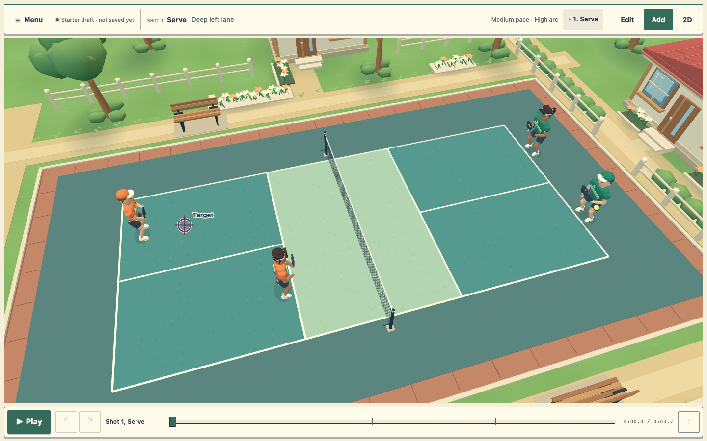
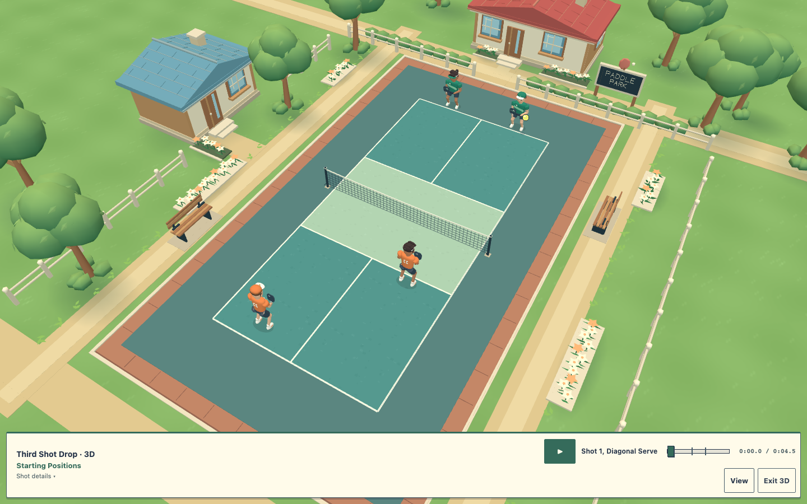
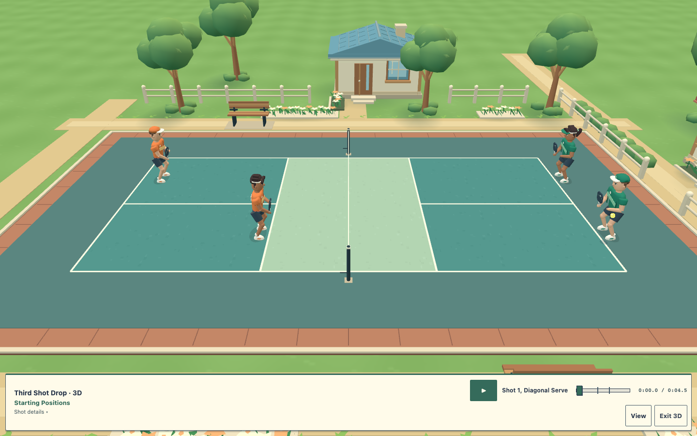
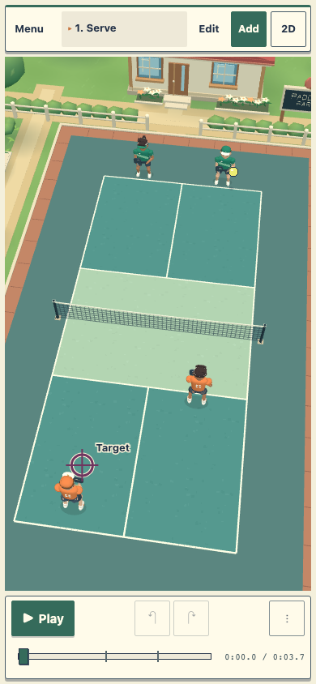
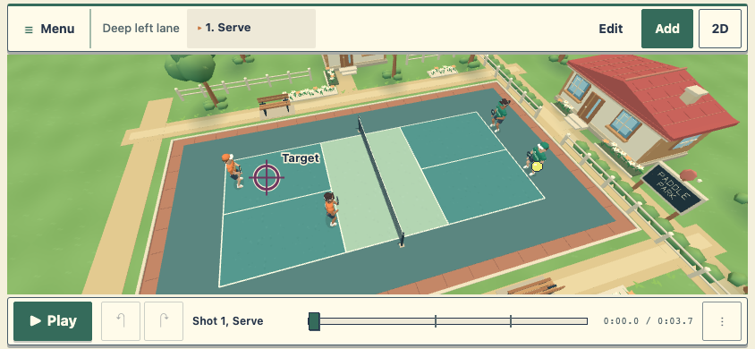
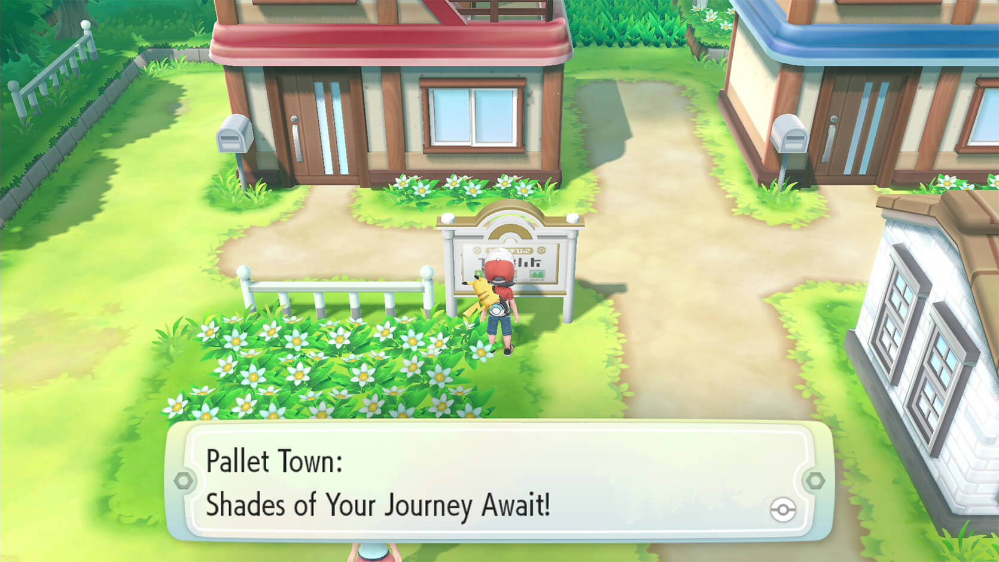
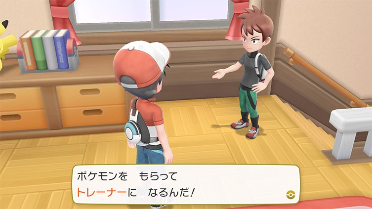

Matched normal builder
Drag to compare the owner-reviewed candidate on the left with this pass on the right. Same viewport, play and camera.


Before · reviewed candidateAfter · village art passFull scene and physical strokes
Overhead · original village scenery around the regulation court
Sideline · the court and ball remain unobstructed
Phone portrait · normal authoring
Before · 390 × 844 After · 390 × 844
After · 390 × 844
Phone landscape
After · 844 × 390, normal authoring
Human detail
Inspection cameras, with the HUD hidden, show the original face, hair, uniform and anatomy work. These are detail views; the normal gameplay camera is shown above.
Motion · four representative plays
Serve and return, third-shot drop, third-shot drive and fifth-shot drop. Each contact is inspected before normal playback. Existing timing, trajectory, contact, handedness and shared-clock behavior remain authoritative.
Before · reviewed candidate motionAfter · frozen village art motion
Reference and honest scope
The art direction was studied from the official Pokémon: Let’s Go Kanto environment images and official human character scene. Reference images are retained only in these review documents. The application uses original generated geometry and surface colors; it includes no copied characters, creatures, buildings or franchise assets.
Official environment reference · The Pokémon Company
Official human reference · The Pokémon Company
The independent reviewer accepted a substantial move toward this human village direction. This is still a lighter procedural interpretation: foliage, cast shadows, material richness and some close-up joint seams remain less finished than the commercial reference.
Performance remains a tradeoff: the richer scene measures about 25 ms median callback cadence in headless software rendering, versus about 16.7 ms before. Pose CPU is lower and draw calls are fewer, but rendering parity is not achieved. See the verification report for the matched measurements. Physical phone performance has not been measured.